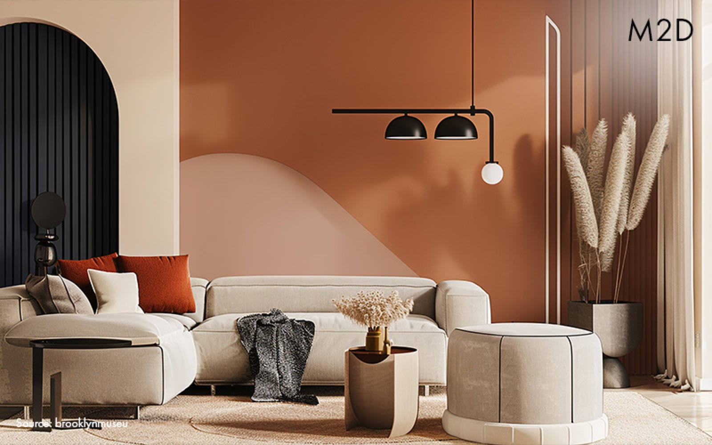
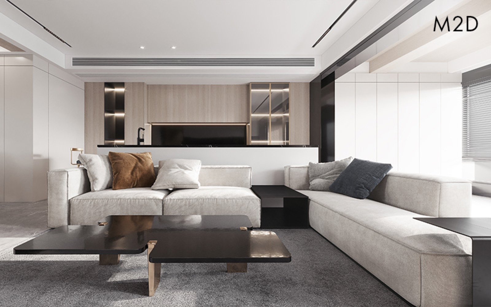

Part 1: Introduction

When it comes to interior design and renovation, it is common to hear the terms "modern" and "contemporary" used interchangeably. However, these two styles are not identical. While both prioritise clean lines, open spaces, and functional layouts, the similarities largely end there. Each style has its own visual language, design principles, and historical context.
In essence, modern interior design is a specific style that came to life in the early to mid-20th century. It is defined by minimalism, practical function, and the use of natural materials. In contrast, contemporary interior design is fluid and constantly evolving. It draws inspiration from various styles, both past and present, whilst responding to current trends and technologies. This makes it adaptable, diverse, and highly reflective of personal taste and lifestyle.
If you are planning to renovate or update your home, understanding the difference between modern and contemporary design can help guide key decisions. This article explains what contemporary interior design really means, its core features, and how it differs from modern style, so you can create a space that feels both current and timeless.
Part 2: Understanding Contemporary Interior Design and Modern Design

2.1. What Is Contemporary Interior Design?
The word “contemporary” literally means “of the present time.” Unlike fixed styles such as modern, industrial, or traditional, contemporary interior design is not tied to a single historical period. Instead, it is constantly evolving, shaped by global influences and technological developments. It reflects what is popular right now while borrowing timeless qualities from other styles, including mid-century modern design elements, minimalism, and even Art Deco.
What sets contemporary interior design apart is its fluidity. It may feature clean lines like modern design, but it also allows for fluid shapes, soft furnishings, bold art pieces, and smart technologies. You might see a mix of raw materials such as stone and wood paired with metal finishes or high-gloss accents. There is no one-size-fits-all approach; instead, it adapts to your space, needs, and personal taste.
Origins and Historical Context:
Contemporary interior design first emerged in the 1970s, right after the height of the modernist movement. As people began seeking more diversity and personality in their homes, designers moved away from the rigidity of modernism. The result was a new style that fused old and new, encompassing both simplicity and expression.
Contemporary architecture and design have continued to evolve ever since, often reflecting changes in culture, sustainability, and technology. In Singapore, this adaptability makes it an appealing choice for both HDB interior design and interior design for condos.
2.2. What are the Key Features of Contemporary Interior Design?
1. Neutral Colour Palette
Contemporary design favours a calming and versatile base made up of whites, greys, blacks, and soft earth tones. These neutrals create a clean backdrop that supports a wide range of furniture, materials, and lighting styles. Occasional accents, whether bold, pastel, or metallic, are added through art, cushions, or rugs to introduce visual interest without overwhelming the space.
2. Clean Lines and Minimalism
Simplicity is key when it comes to contemporary interior design. Spaces are often open, uncluttered, and structured using clean, geometric forms. This emphasis on minimalism minimises unnecessary decoration whilst highlighting the shape and function of each element. It is a style that values intentional design choices.
3. Natural Light and Smart Lighting
Large windows, sheer curtains, and open layouts allow for an abundance of natural light, which is essential in contemporary homes. At night, sculptural pendant lights or LED tracks offer both task lighting and ambient glow, blending function with artistic expression. This is particularly relevant in interior design for condos in Singapore.
4. Material and Texture Contrast
Contrasting materials, such as wood, stone, glass, and metal, are deliberately used to add depth to the overall design. A jute rug beside a leather chair or an exposed brick wall paired with chrome shelving reflects a balance between natural and industrial aesthetics, often seen in contemporary classic interior design.
5. Functional Statement Pieces
Contemporary interior design features one or two focal elements, like a bold sofa or designer light fixture, that are both functional and artistic. These pieces bring some much-needed personality without disrupting the overall harmony.
6. Technology & Intentionality
Built-in storage, hidden cables, and smart home features are integrated discreetly. The result is a polished, efficient space where innovation meets style—ideal for home interior design in urban settings like Singapore.
2.3. What Is Modern Interior Design?
Modern interior design refers to a distinct style that originated in the early to mid-20th century, primarily between the 1900s and 1950s. It is often mistaken for contemporary interior design, but the two differ significantly in origin, approach, and aesthetic. While contemporary styles evolve with the times, modern design remains anchored in a specific period, rooted in simplicity, functionality, and timelessness.
Modern design is known for its clean lines, uncluttered spaces, and a focus on function over ornamentation. It emerged as a reaction to the overly decorative styles of the Victorian and Edwardian eras. Designers sought to strip away excess and highlight form, materials, and utility.
Origins and Historical Context:
Modern interior design emerged as a response to the ornate styles of Gothic, Renaissance, and Victorian eras. It was influenced by the modernist art movement and industrialisation. The Bauhaus school emphasised "form follows function"—design that serves a practical purpose. Mid-century designers like Charles and Ray Eames and Eero Saarinen created iconic modern furniture using new materials like moulded plywood, fibreglass, and steel.
Unlike contemporary interior design, which borrows freely from multiple styles and adjusts with current trends, modern design adheres to its foundational principles. It suits homeowners who appreciate structured layouts, natural materials, and mid-century modern design elements that remain relevant even today. Understanding this distinction is key when comparing interior design styles.
2.4. What are the Key Features of Modern Design?
Although it is often mistaken for contemporary interior design, modern interior design has distinct characteristics that set it apart. It is rooted in the early to mid-20th century and reflects the values of minimalism, practicality, and clean aesthetics. Here are its defining features:
1. Simplicity in Structure
One of the most recognisable characteristics of modern furniture, for instance, is its emphasis on clean, straight lines.
Layouts are streamlined, functional, and free from unnecessary ornamentation.
Designs often feature symmetry and geometric shapes that reinforce order and structure.
2. Neutral and Earthy Tones
Modern interiors typically rely on a calming palette of white, grey, beige, and brown.
These colours provide a warm and timeless backdrop that complements natural materials.
Bright colours are used sparingly, if at all, to maintain harmony in the space.
3. Use of Natural and Industrial Materials
Wood, leather, exposed steel, and concrete are common elements.
Materials are often left in their raw state, showcasing their natural beauty.
This reflects a blend of nature with industrial influence, a hallmark of mid-century modern design elements.
4. Functional, Low-Profile Furniture
Furniture pieces are purposeful, comfortable, and low to the ground.
Form always follows function, resulting in minimal yet efficient designs.
5. Open Spaces and Natural Light
Modern homes prioritise open layouts that encourage flow and flexibility.
Large windows and minimal window treatments allow natural light to flood the space.
When comparing interior design styles, modern design stands out for its timeless clarity and structure, unlike the more adaptable and trend-driven nature of contemporary interior design.
Part 3: Comparing Interior Design Styles

3.1. What are the Key Differences Between Contemporary and Modern Design?
Although contemporary interior design and modern design are often used interchangeably, they are not the same. Understanding the differences between the two is essential, especially when making long-term home design decisions.
1. Time Period
Modern design is tied to a specific historical period, primarily the early to mid-20th century. It draws from mid-century modern design elements and remains fixed in style.
In contrast, contemporary interior design is ever-changing. It evolves with the times, adapting to current interior design trends and consumer preferences.
2. Design Approach
Modern design prioritises minimalism and function. It avoids trends and remains consistent in its visual language.
Contemporary design is flexible, often blending modern and contemporary interiors with styles like industrial, minimalist, or even traditional influences.
3. Furniture Style
Modern furniture typically features low profiles, angular shapes, and natural materials.
Contemporary furniture leans towards fluid lines, sculptural forms, and polished finishes that reflect the moment’s aesthetic.
4. Colour Palette
Modern design favours earthy, subdued tones to create timeless warmth.
Contemporary design uses neutrals too but introduces bolder contrasts, crisp whites, or pops of colour based on emerging trends.
5. Materials & Finishes
Modern interiors highlight wood, leather, and steel.
Contemporary spaces mix natural with synthetic materials like lacquer, glass, or chrome to keep up with innovation.
Here is a table that summarises the key characteristics of both contemporary and modern designs.
Feature | Contemporary Design | Modern Design |
Time Frames | Fixed style from early to mid-20th century (1900s–1950s) | Ever-evolving; reflects current design trends |
Design Approach | Emphasises function, clean lines, and simplicity | Embraces flexibility; mixes styles and trends |
Furniture Style | Low-profile, straight-lined furniture made of natural materials | Sleek, sculptural pieces with curves and glossy finishes |
Colour Schemes | Warm, earthy tones like beige, brown, and olive | Neutral bases with sharp contrast or bold accent colours |
Materials & Finishes | Natural finishes—wood, leather, stone, metal | Mix of natural and synthetic—chrome, glass, lacquer |
When comparing interior design styles, these subtle but important contrasts help homeowners choose the right approach for their lifestyle and taste.
3.2. How to Tell Which Style You’re Looking At
Determining whether a space features contemporary interior design or modern design can sometimes be tricky, especially since both share similarities like clean lines and minimal clutter. However, there are a few key ways to distinguish between the two.
1. Personal Style and Lifestyle Fit
Modern: This style suits homeowners who prefer consistency throughout their home and value functional, structured spaces with natural warmth. If you like classic, understated looks that do not change with trends, modern design is a great fit.
Contemporary: Ideal for individuals who enjoy keeping up with current interior design trends and want a space that feels fresh and dynamic. If you are drawn to contemporary home decor ideas featuring contrast, curves, and polished surfaces, then contemporary interior design may be right for you. It fits well with those who like flexibility and updating their home style regularly.
2. Ask Yourself These Questions
Does the room feel timeless or more trend-focused?
Are the shapes mainly straight and geometric, or do you notice curved, sculptural forms?
Are the materials natural and matte, or glossy and sleek?
Considering these questions can help you paint a clearer picture about the style you are looking at. This is especially helpful in interior design and renovation projects, where having a firm understanding of the direction you are going will produce a more accurate end product.
If you are still unsure, the good news is that blending modern and contemporary interiors is always an option to create a personalised, balanced look.
3.3. What If You Can’t Decide? Combine Both
If you find it difficult to choose between modern and contemporary interior design, you are not alone. Many homeowners and designers in Singapore opt to blend these two styles, creating a space that balances timelessness with current trends. This approach offers the best of both worlds and allows for more creative freedom in your home interior design.
When blending modern and contemporary interiors, consider using foundational elements from modern design, such as simple, functional furniture and clean lines, whilst layering in bold accents, softer textures, or sculptural pieces typical of contemporary interior design. For example, you might pair a classic mid-century modern chair with a sleek, glossy coffee table or add vibrant contemporary art to a room dominated by natural materials and neutral tones.
This combination respects the characteristics of modern design like low profiles and natural finishes but also embraces the evolving nature of contemporary interior design, including pops of colour or mixed materials like chrome and glass. The result is a space that feels both familiar and fresh, suitable for Singaporean residential projects including interior design for condos and HDB flats alike.
Ultimately, mixing styles can help you achieve a unique, balanced look that adapts to your personal preferences and needs whilst reflecting current interior design trends.
FAQs
1. Can you mix modern and contemporary styles in one home?
Yes, blending the two can create a timeless yet trend-relevant space. Many designers use modern furniture with contemporary finishes or accessories for a balanced look.
2. Is contemporary design the same as minimalist design?
Not exactly. While both share clean lines and clutter-free spaces, minimalism is a design philosophy focused on “less is more,” whereas contemporary interior design is more flexible and trend-influenced.
3. How often does contemporary design change?
Since it is based on current trends, contemporary interior design can shift every few years. The evolution depends on emerging styles in architecture, technology, and pop culture.
Contemporary interior design is dynamic and ever-evolving, reflecting the latest trends and incorporating a wide range of influences to create flexible, stylish spaces. On the other hand, modern design is rooted in a specific historical period and embraces simplicity, function, and timelessness through well-defined principles like clean lines and natural materials. Understanding these differences is vital for anyone who wishes to undertake an interior design and renovation project.
Knowing these distinctions allows you to make more informed decisions about your home’s style and functionality. It also helps you refine your vision and your ability to convey it accurately to your designer.
Here at M2D Design and Consultancy, our team is well-versed in global current interior design trends, as well as how to implement them in Singaporean homes. We are committed to working closely with you, giving you professional guidance along the way whilst respecting your overall vision. With a focus on quality craftsmanship, attention to detail, and seamless project management, our team is built to deliver excellent results.
For more information about our services, please contact us today.